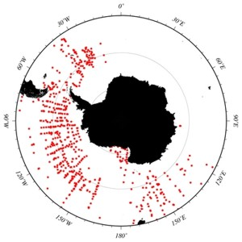
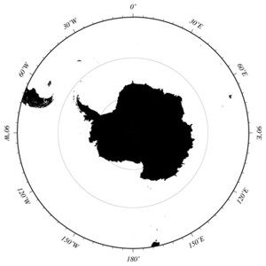

The COPEPOD data system differentiates "quantitative data" from "non-quantitative data" in its maps and data summary tables to reduce frustration by "numeric-data-seeking users" that download an apparently large taxonomic data collection only to find out later that there were little or no usable data values for that taxa group.
For example, someone seeking "Antarctic phytoplankton data" may come across the data query results shown below on the left:

Figure 1: Map of ELTANIN plankton tows that contain any type of phytoplankton observation.
(Query results from the World Ocean Database).
|
|

Figure 2: Map of ELTANIN plankton tows that contain quantitatively usable phytoplankton data.
[Yes, this data plot is empty.]
|
|
In the case of the ELTANIN "phytoplankton data" above, the phytoplankton observations consist of rare instances in which larger phytoplankton snagged on the silk of a large mesh zooplankton net. These phytoplankton data are therefore not quantitative, but may still be useful in some qualitative applications.
The COPEPOD data system displays "non-quantitative data" with gold dots, as seen in the figure to the right, whereas quantitative are plotted with green dots.
"Non-quantitative data" include:
- sampling gear bias; ( phytoplankton from a large mesh net )
- gear failure; ( a broken cod-end or a failed flow meter )
- "relative abundance"* data.
* "Relative abundance" is most common in historical data sets, where the investigator quantified the plankton density into classes such as "rare", "common", "abundant", or "dominant". These data often have a detailed taxonomic resolution (e.g., all/most species were identified) and are still useful for biogeography or biodiversity applications if not quantitative
|